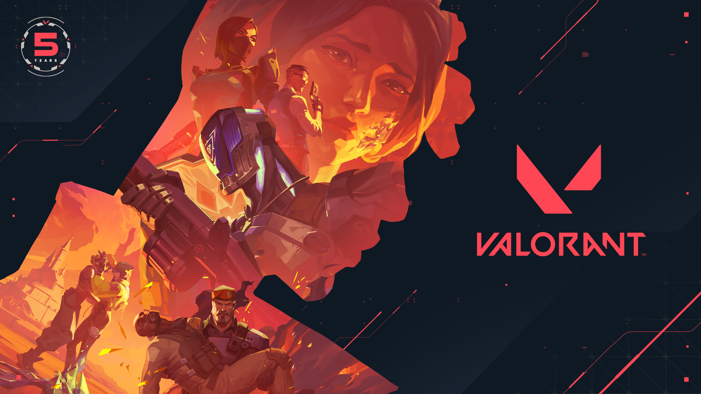

Valorant
Introduction
Valorant is a tactical first-person shooter developed by Riot Games that combines precise gunplay with unique
character abilities. Released in 2020, it quickly became a global sensation, emphasizing strategic team play and
innovation within the esports community.

Gameplay
Valorant pits two teams of five players against each other, alternating between attacking and defending
objectives. Players use a combination of precise shooting and agent-specific abilities to outsmart and outgun
their opponents across well-designed maps.
Agents
The game features an array of unique agents, each with their own special abilities that influence tactics and
team strategies. These agents fall into categories like Duelists, Controllers, Sentinels, and Initiators.
- Duelists: Specialists in aggressive plays and fragging.
- Controllers: Experts at manipulating battlefield control.
- Sentinels: Defensive players focused on protection and healing.
- Initiators: Agents who disrupt enemy defenses and gather intel.
Competitive Scene
Valorant has rapidly established itself in the esports arena with numerous professional leagues, global
tournaments, and a growing fanbase. Its blend of tactical skill and character abilities creates intense and
highly strategic competitions around the world.
Gallery


Valorant — Tactical Hero Shooter by Riot Games © 2025